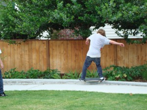

<?xml version="1.0" encoding="UTF-8"?><rss version="2.0"
	xmlns:content="http://purl.org/rss/1.0/modules/content/"
	xmlns:wfw="http://wellformedweb.org/CommentAPI/"
	xmlns:dc="http://purl.org/dc/elements/1.1/"
	xmlns:atom="http://www.w3.org/2005/Atom"
	xmlns:sy="http://purl.org/rss/1.0/modules/syndication/"
	xmlns:slash="http://purl.org/rss/1.0/modules/slash/"
	>

<channel>
	<title>park users &#8211; Friends of Ballard Corners Park</title>
	<atom:link href="http://ballardcornerspark.org/ballardcornerspark/category/park-users/feed/" rel="self" type="application/rss+xml" />
	<link>http://ballardcornerspark.org/ballardcornerspark</link>
	<description>Just another WordPress weblog</description>
	<lastBuildDate>Tue, 12 Apr 2016 16:55:53 +0000</lastBuildDate>
	<language>en-US</language>
	<sy:updatePeriod>hourly</sy:updatePeriod>
	<sy:updateFrequency>1</sy:updateFrequency>
	<generator>https://wordpress.org/?v=4.7.2</generator>
	<item>
		<title>Skater!</title>
		<link>http://ballardcornerspark.org/ballardcornerspark/2009/06/skater/</link>
		<comments>http://ballardcornerspark.org/ballardcornerspark/2009/06/skater/#comments</comments>
		<pubDate>Wed, 01 Jul 2009 06:18:20 +0000</pubDate>
		<dc:creator><![CDATA[David Folweiler]]></dc:creator>
				<category><![CDATA[park users]]></category>

		<guid isPermaLink="false">http://ballardcornerspark.org/ballardcornerspark/?p=725</guid>
		<description><![CDATA[I have been waiting to see skaters at the park.  This is the first one I spotted &#8220;riding the rail&#8221;.  I pinned him and his buddy down.  I asked them whether the &#8220;skate spot&#8221; turned out OK.  They gave it a thumbs up, saying it was very smooth.  I took it as a compliment.]]></description>
				<content:encoded><![CDATA[<p><a href="../../../wp-content/uploads/2009/06/dsc05258.jpg"></a></p>
<p>I have been waiting to see skaters at the park.  This is the first one I spotted &#8220;riding the rail&#8221;.  I pinned him and his buddy down.  I asked them whether the &#8220;skate spot&#8221; turned out OK.  They gave it a thumbs up, saying it was very smooth.  I took it as a compliment.</p>
]]></content:encoded>
			<wfw:commentRss>http://ballardcornerspark.org/ballardcornerspark/2009/06/skater/feed/</wfw:commentRss>
		<slash:comments>1</slash:comments>
		</item>
	</channel>
</rss>
